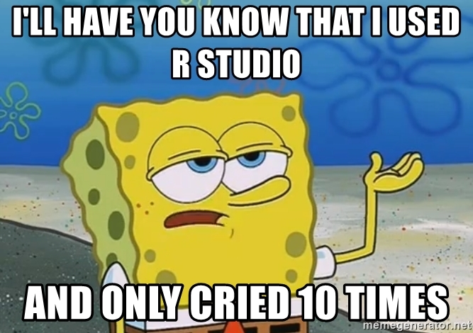
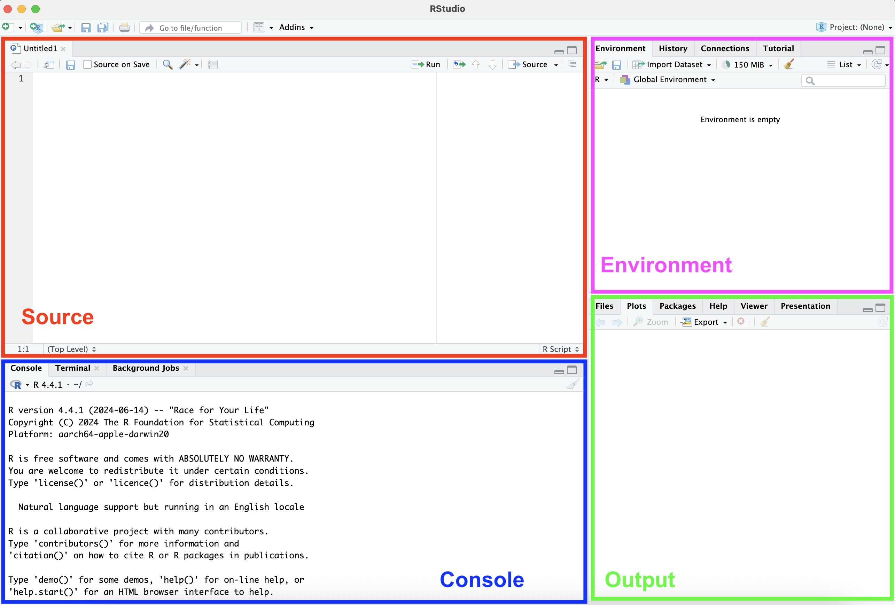
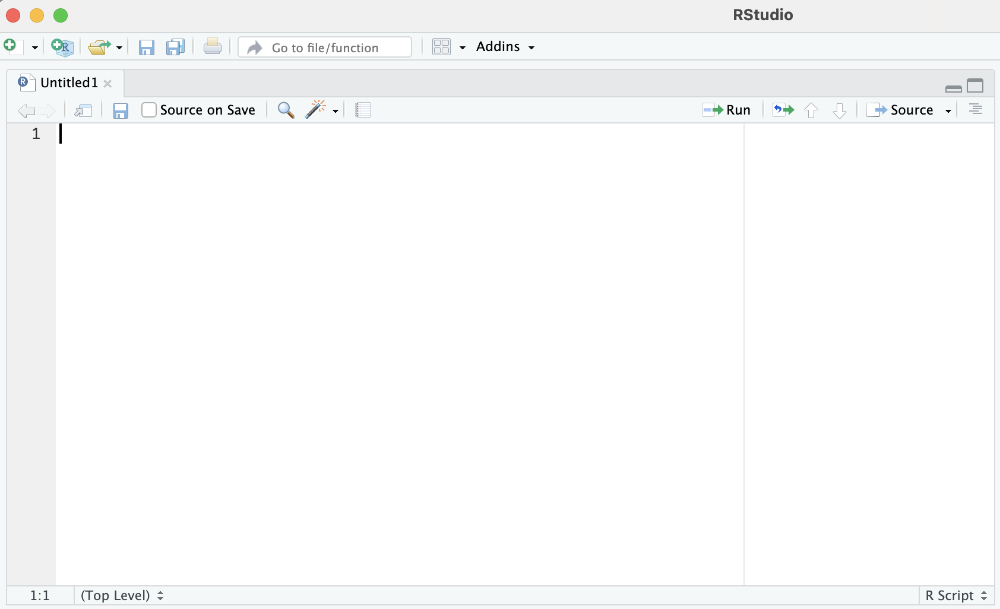
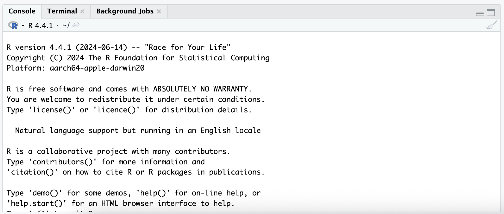
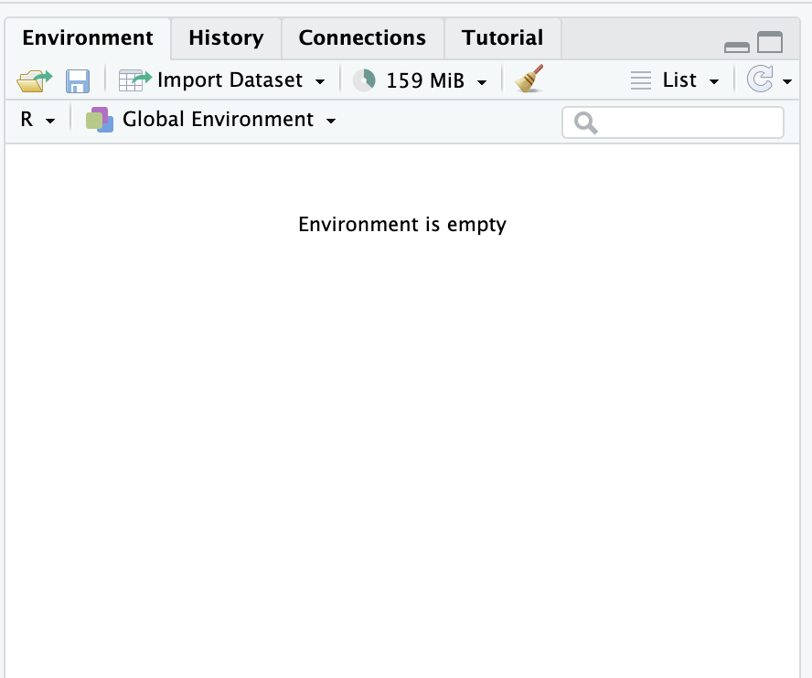
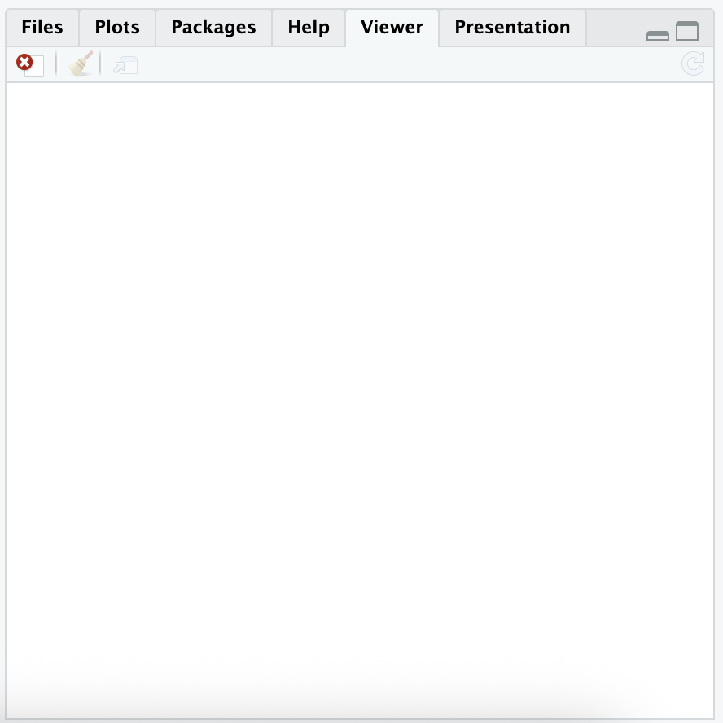

The PSY6422 Blackboard page has everything you need for this module
Link to slides
Worksheets
Information about assessment
Discussion board for peer Q&A
What Can I Expect from PSY6422?
The overarching goal of this module is to provide basic skills in computational data management and visualisation
By the end of this module, you should be able to:
Import, wrangle, and visualise data in R in a meaningful way
Import/export datasets in different formats
Process and transform datasets
Understand the fundamentals of project management
Prepare reproducible project documentation using R
Publish data projects to the web via GitHub
How Will I Be Assessed?
You will complete a portfolio that will consist of an initial (5%) and final (5%) self-assessment and a mini project (90%).
The Initial Self-Assessment - About
The initial self-assessment is an opportunity for you to reflect on your data management and visualisation experiences and think about what you might want to visualise for your portfolio project.
The Initial Self-Assessment - Submission
You must submit a PDF document via the Blackboard submission portal
Your self-assessment should be no more than one A4 page (i.e., <500 words)
The deadline for this assessment is Friday 16th October at 14:00
The Initial Self-Assessment - Aims
To receive full marks, you will need to adequately address the following aims:
Aim 1:Tell me what you know already
Review the Blackboard module page and write approximately 50 words on your experience with computers and coding.
Aim 2:Start thinking about data to visualise
Describe a dataset you have access to and what you’ll do with it OR describe the kind of topic you’d like to identify relevant data to do a project on.
Aim 3:Set some targets for what you’d like to learn next
Describe one or two ambitions, techniques, technologies, or tools you’d like to acquire.
The Wrap-Up Self-Assessment - About
The wrap-up self-assessment is an opportunity for you to reflect on your experience in this module.
The Wrap-Up Self-Assessment - Submission & Criteria
You must submit a PDF document via the Blackboard submission portal
Your self-assessment should be no more than one A4 page (i.e., <500 words)
You will complete this assessment using the template found in the Markdown file PSY6422_wrapup_self_assessment.qmd
The deadline for this assessment is Friday 11th December at 14:00
To receive full marks, you will need to adequately address the questions in the template
The Mini Project - About
The mini project is a chance to deploy all the skills taught on the module in a single complete data visualisation project.
Essentially, you will think of a question you are interested in answering with a visualisation; you will find some data to help you answer that question; you will write code explaining what the data are (who, what, where, why, when), what you hope to answer with that data, and your process from raw data to visualisation; you will share your project/code via GitHub.
The Mini Project - About
The ambition is that a project is complete and reproducible
It contains the input, the output, documentation
The whole is stitched together with an R code - the script that changes the input to the output
Anyone should be able to run your script on their own computer and produce the same output
The Mini Project - Submission
You must submit an RMarkdown/Quarto file and a GitHub link via the Blackboard submission portal
The deadline for this assessment is Friday 11th December at 14:00
The Mini Project - Project Requirements
A complete project, including raw data, analysis scripts, documentation and visualisation(s) shared in a way that allows the visualisation to be reproduced and understood. In practice, this means you will upload a project to GitHub, containing an Rmarkdown/Quarto file which explains your visualisation, as taught in the module.
Details on the headings that should be included in your project can be found on Blackboard.
Examples from previous years can be found on Blackboard.
See the rubric on Blackboard for detailed assessment criteria.
What is R? What is R Studio?
R is a programming language specialised for supporting statistical analysis
RStudio is an interface to R
Do I Really Need to Learn R?
There are some benefits to R:
R is free (Yay open research!)
No licenses or user restrictions
Open source
Peer/academic led with a great online community
R is becoming increasingly popular
Desirable skill for industry
Becoming more common in research/academia

The RStudio Interface

RStudio: Source Pane

View and edit code-related files
Can save scripts you type here
Can open multiple files at once, which appear in new tabs
RStudio: Console Pane

Area to interactively execute code
Includes integrated Terminal tab
Execute system commands
Includes Background Jobs tab
Send long running R scripts to local and remote background jobs
Continue working in RStudio while jobs run in background
RStudio: Environment Pane

Environment pane includes several tabs
Environment tab displays currently saved R objects
History tab displays commands executed in current session
Connections tab displays connections to local or remote databases
Tutorial tab can be used to load interactive learnr tutorials
Build tab is available for specific R projects that interact with it
E.g., R packages, Quarto, RMarkdown websites, books
VCS tab changes based on version control system enabled in session
E.g., Using Git changes tab name to Git and provides relevant commands
RStudio: Output Pane

The Output pane displays various outputs
E.g., plots, HTML content, on-disk files
File tab provides interactive exploration of current R project and entire directory
Plots tab displays static plot images generated by code
Packages tab shows currently installed R packages
Help tab displays package documentation and vignettes
For help with a specific R function, call ?functionName
Viewer tab can display web content
E.g., Shiny apps, Quarto webpages
Presentation tab used to display HTML slides from Quarto’s revealjs format